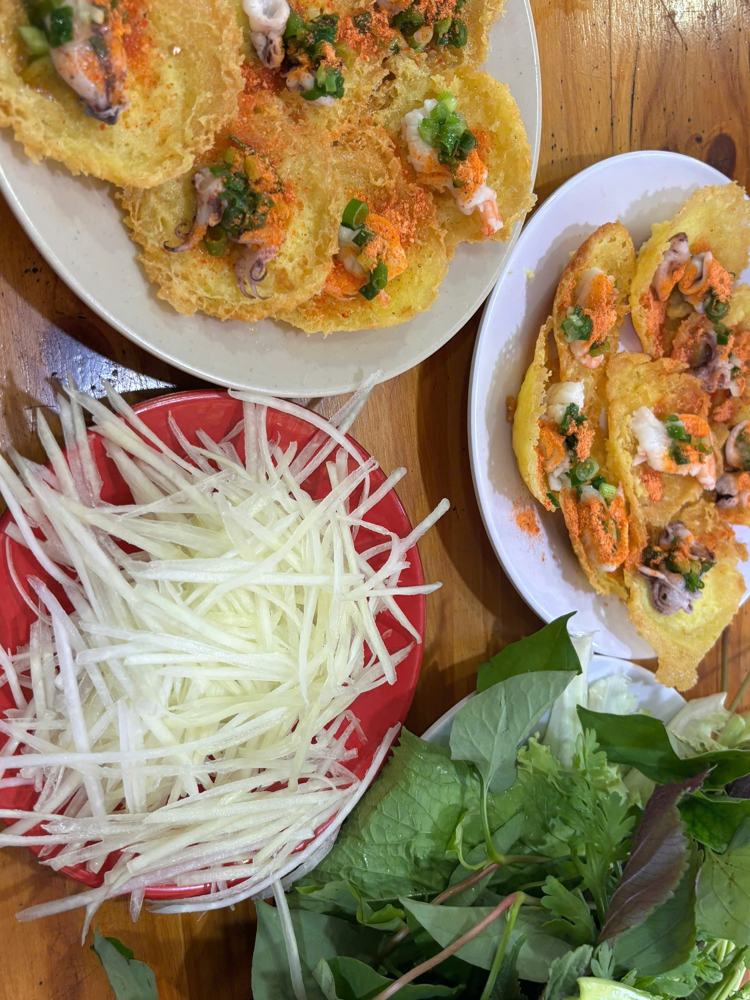
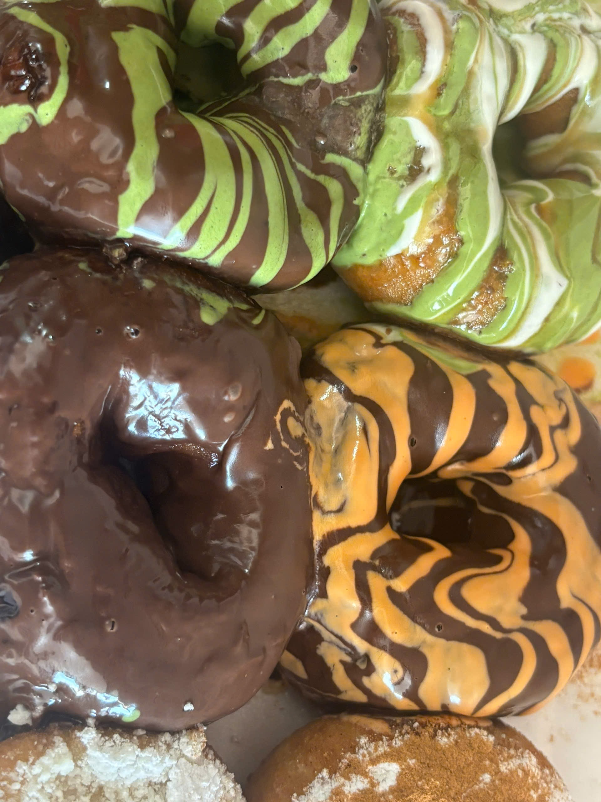
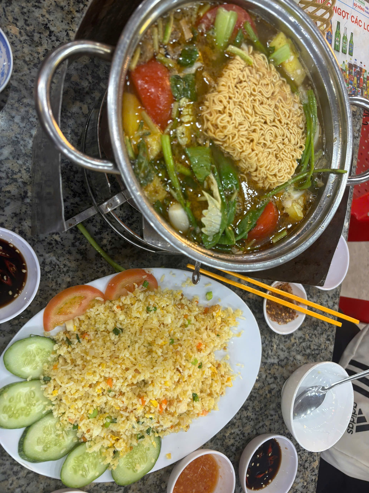
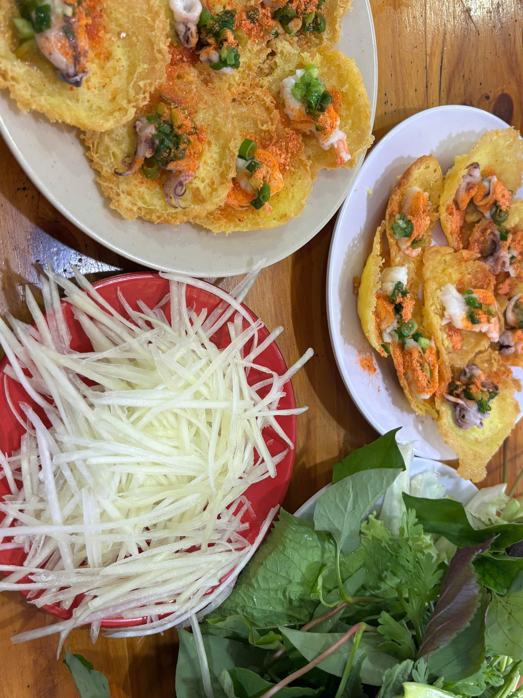
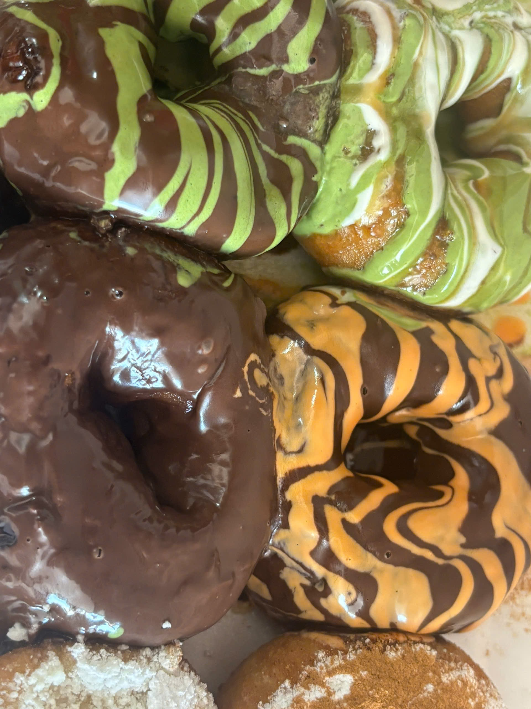
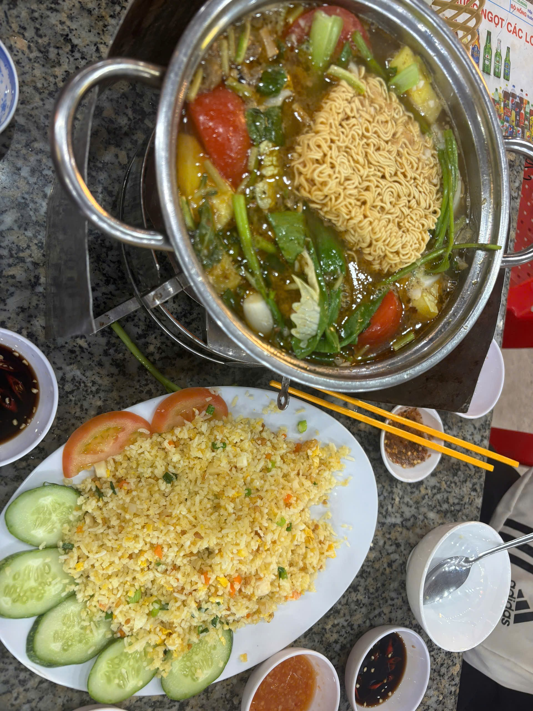

Du lịch Vũng Tàu
14/02/2026
Ngày 12/02/2026, mình và gia đình đã đi du lịch Vũng Tàu.
Đây là một số món mình đã thưởng thức ở đó.



Khám phá những điều thú vị về hai bạn lớp 12C15
Sinh nhật: 20/10/2008
Học sinh lớp 12C15.
Mình yêu thích chó mèo, động vật và có ước mơ trở thành một lập trình viên.
Học sinh lớp 12C15.
Xin chào mọi người,
Mình là Nguyễn Đức Tân, hiện đang là học sinh lớp 12C15. Mình đang ở giai đoạn cuối cấp – một khoảng thời gian vừa áp lực nhưng cũng đầy động lực vì đây là bước đệm quan trọng cho tương lai.
Mình có niềm yêu thích với các môn tư duy như Toán và đặc biệt quan tâm đến lĩnh vực kỹ thuật – công nghệ. Mình luôn cố gắng rèn luyện khả năng phân tích, giải quyết vấn đề và không ngừng học hỏi những điều mới.
Ngoài việc học, mình cũng thích tìm hiểu về bóng đá, chiến thuật thi đấu và những câu chuyện truyền cảm hứng từ các cầu thủ hàng đầu thế giới.
Mục tiêu của mình trong thời gian tới là đỗ vào một trường đại học tốt, theo đuổi ngành kỹ thuật mà mình đam mê và phát triển bản thân từng ngày.
Rất vui khi được kết nối và chia sẻ cùng mọi người trên blog này!
— Nguyễn Đức Tân, 12C15
14/02/2026
Ngày 12/02/2026, mình và gia đình đã đi du lịch Vũng Tàu.
Đây là một số món mình đã thưởng thức ở đó.



17/02/2026
Khu phố mình đã bắn rất nhiều pháo bông để mừng ngày Tết.
17/02/2026
Tết đối với mình không chỉ là dịp nghỉ ngơi sau một năm học vất vả
mà còn là khoảng thời gian ý nghĩa bên gia đình.
Mùng 1 mình thường ở nhà với gia đình. Sáng dậy sớm mặc đồ mới,
chúc Tết ông bà, ba mẹ và nhận lì xì đầu năm. Cả nhà quây quần ăn cơm, nói chuyện về một năm đã qua và chúc nhau những điều tốt đẹp.
Với mình, mùng 1 là ngày ấm áp nhất vì được ở cạnh những người thân yêu.
18/02/2026
Mùng 2 mình theo ba mẹ đi chúc Tết họ hàng. Gặp lại anh chị em họ sau một năm, mọi người hỏi han chuyện học hành, dự định tương lai. Là học sinh lớp 12 nên mình cũng được hỏi khá nhiều về thi đại học 😅 nhưng đó cũng là động lực để mình cố gắng hơn.
19/02/2026
Mùng 3 là thời gian dành cho bạn bè.
Mình thường đi chơi, cà phê hoặc tụ tập đầu năm.
Cảm giác gặp lại bạn bè sau kỳ nghỉ,
cùng nhau nói về mục tiêu năm mới rất vui và đầy năng lượng tích cực.
Tết không chỉ là ăn ngon hay nhận lì xì,
mà còn là sự đoàn tụ, yêu thương và khởi đầu cho một năm mới nhiều cố gắng.
Với mình – Nguyễn Đức Tân 12C15 – Tết là động lực để bắt đầu hành trình chinh phục những mục tiêu lớn phía trước.